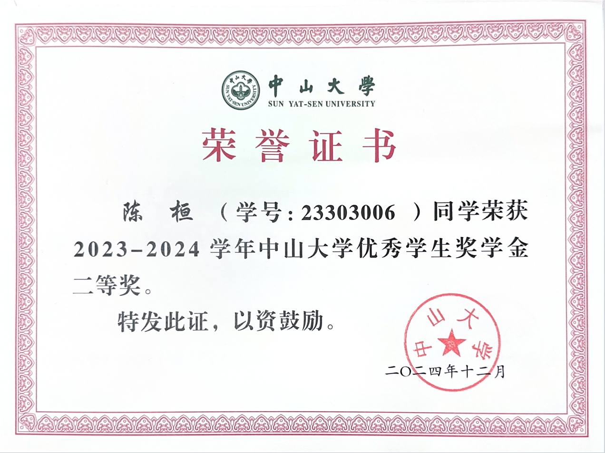
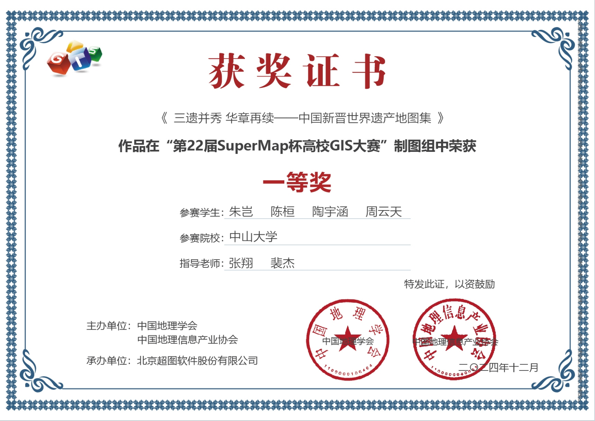
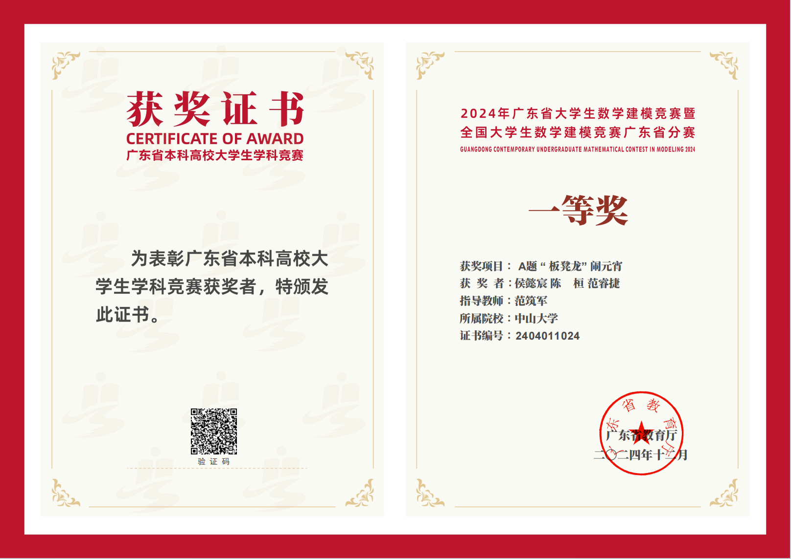
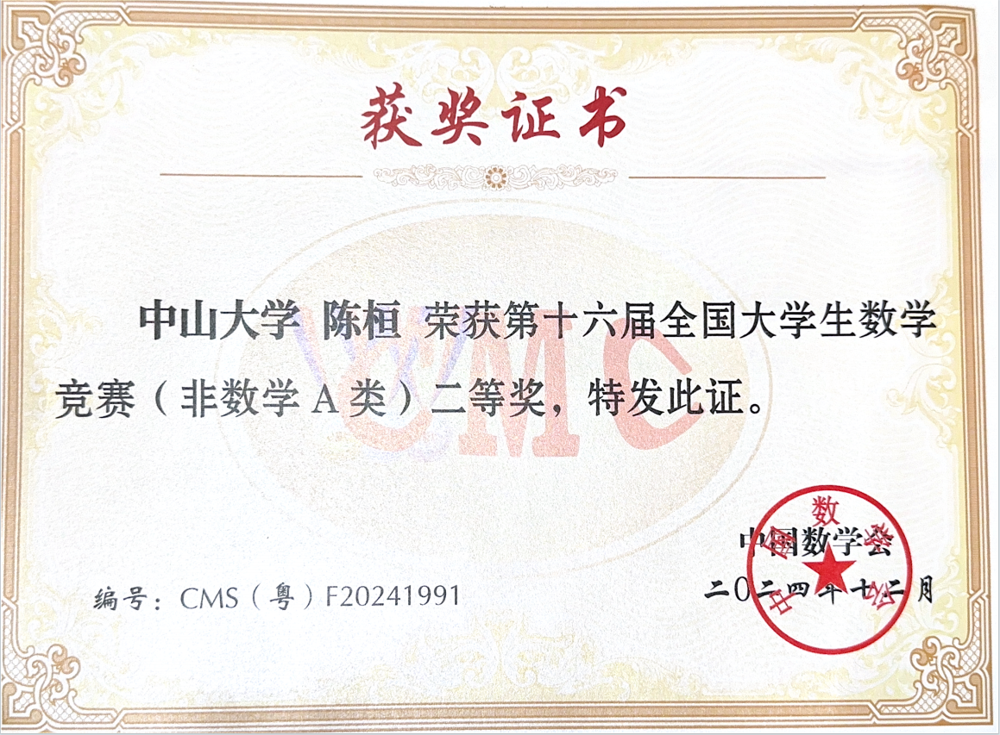
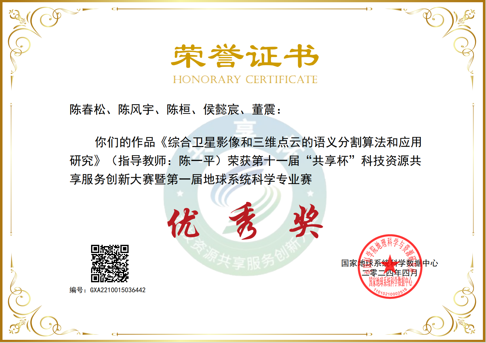

Huan Chen (陈桓)🎓 Undergraduate Student
School of Geospatial Engineering and Science
|
|

Biography
Hello! I am an undergraduate student majoring in Remote Sensing Science and Technology at the Sun Yat-sen University, School of Geospatial Engineering and Science.
My research interests focus on Urban Sustainable Development, 2D Computer Vision, and Geographic Information Systems (GIS). I am passionate about leveraging computer vision techniques and geospatial technologies to address urban sustainability challenges, including smart city development, urban environmental monitoring, and sustainable urban planning.
Currently, I am conducting research at the 3D Spatio-Temporal AI Laboratory under the guidance of Prof. Yiping Chen (陈一平), an Associate Professor and Ph.D. Supervisor at the School of Geospatial Engineering and Science, Sun Yat-sen University. The laboratory focuses on cutting-edge research in artificial intelligence applications for spatio-temporal data analysis and 3D geospatial modeling.
I am actively seeking research opportunities to explore the intersection of computer vision and geospatial science, particularly in applications that contribute to sustainable urban development and environmental conservation.
Feel free to contact me by email if you are interested in discussing academic collaboration or research opportunities.
欢迎交流学习和合作机会！期待您的指导！
News
- [08/2025] 🎉 One paper is accepted by ACM SIGSPATIAL 2025 !
- [08/2025] 🎉 One paper is accepted by International Conference on Cyberworlds (CW 2025) !
- [12/2024] 🏆 Won First Prize in Cartography Group of the 22nd SuperMap Cup National College GIS Competition !
- [12/2024] 🏆 Won First Prize of 2024 Guangdong Provincial Mathematical Contest in Modeling for College Students !
- [10/2024] 🏆 Won Special Prize of the 8th National LiDAR Conference "HuaCe Cup" 3D Digital Base Basic Geographic Data Processing Competition !
Education
|
Sun Yat-sen University, China Bachelor of Engineering in Remote Sensing Science and Technology School of Geospatial Engineering and Science Sep. 2023 - Now |
Publications

|
🎉 Towards A New Era of Geo-Foundation Models: Expert-Guided Multimodal Alignment and Geospatial Context Awareness Han Ting, Huan Chen, Chaolei Wang, Yilan Ren, Meiliu Wu ACM SIGSPATIAL 2025 |

|
🎉 VoxelFlow: 2D Semantic Mask-Guided Voxel Flow for Open-Vocabulary 3D Instance Segmentation Chaolei Wang, Huan Chen, Jin Ma, Ting Han, Yiping Chen International Conference on Cyberworlds (CW 2025) |
Honors & Awards
|  |
[12/2024] 🏆 Second Prize of Outstanding Student Scholarship of Sun Yat-sen University for Academic Year 2023-2024 (2023-2024学年中山大学优秀学生奖学金二等奖) Sun Yat-sen University (中山大学) |
|  |
[12/2024] 🏆 First Prize in Cartography Group of the 22nd SuperMap Cup National College GIS Competition (第22届SuperMap杯高校GIS大赛制图组一等奖) Geographical Society of China / China Association of Geographic Information Industry (中国地理学会/中国地理信息产业协会) |
|  |
[12/2024] 🏆 First Prize of 2024 Guangdong Provincial Mathematical Contest in Modeling for College Students and Guangdong Division of National Mathematical Contest in Modeling for College Students (2024年广东省大学生数学建模竞赛暨全国大学生数学建模竞赛广东省分赛一等奖) Department of Education of Guangdong Province (广东省教育厅) |
|  |
[12/2024] 🏆 Second Prize of the 16th National Mathematical Contest for College Students (Non-Mathematics Category A) (第十六届全国大学生数学竞赛(非数学A类)二等奖) Chinese Mathematical Society (中国数学会) |
|
[10/2024] 🏆 Special Prize of the 8th National LiDAR Conference "HuaCe Cup" 3D Digital Base Basic Geographic Data Processing Competition (第八届全国激光雷达大会"华测杯"三维数字底座基础地理数据处理竞赛特等奖) China National Committee of the International Society for Digital Earth (国际数字地球学会中国国家委员会) |
|
|  |
[04/2024] 🏆 Excellence Award of the 11th "Sharing Cup" Innovation Competition of Science and Technology Resources Sharing Service and the 1st Earth System Science Professional Competition (第十一届"共享杯"科技资源共享服务创新大赛暨第一届地球系统科学专业赛优秀奖) National Earth System Science Data Center (国家地球系统科学数据中心) |